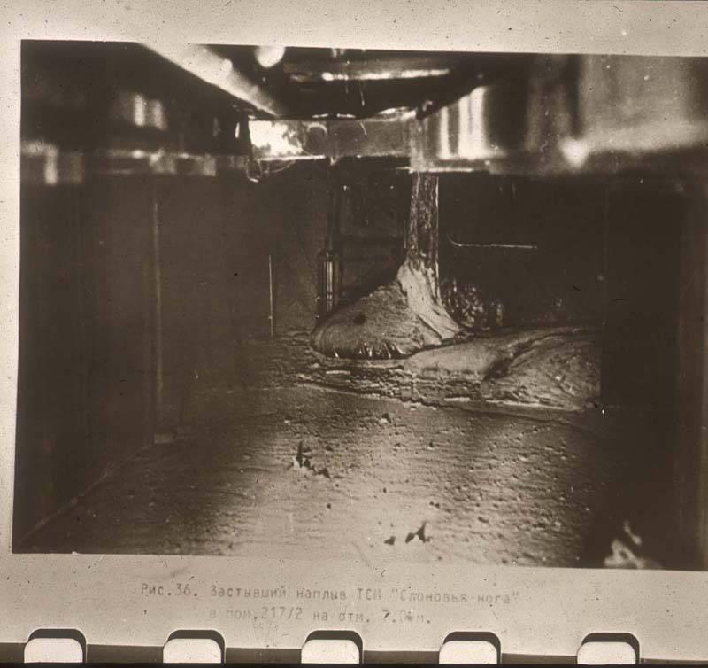

The Elephant's Foot
[From Wikipedia, the free encyclopedia]
The Elephant's Foot is the nickname given to a large mass of Corium and other materials formed underneath the Chernobyl Nuclear Power Plant, near Pripyat, Ukraine, during the Chernobyl disaster of April 1986. Discovered in December that year, it is presently located in a maintenance corridor underneath the remains of Reactor No. 4. It remains an extremely radioactive object [...]

[Excerpt from Chernobyl’s Hot Mess, “the Elephant’s Foot,” Is Still Lethal by Kyle Hill]
By the fall of 1986, the emergency crews fighting to contain the nuclear disaster at Chernobyl made it into a steam corridor beneath failed reactor Number 4. Inside this chamber they found black lava that had oozed straight from the core. The most famous formation was a solid flow that their radiation sensors firmly told them not to approach. With cameras pushed in from around a corner, the workers dubbed the dimly lit mass “the Elephant’s Foot.” According to readings taken at the time, the still hot portion of molten core put out enough radiation to give a lethal dose in 300 seconds.
The Elephant’s Foot could be the most dangerous piece of waste in the world.
[Excerpt from Chernobyl's Elephant's Foot Is a Toxic Mass of Corium by Patrick J. Kiger:]
What Is the Chernobyl Elephant's Foot?Because Elephant's Foot was so radioactive, scientists at the time used a camera on a wheel to photograph it. A few researchers got close enough to take samples for analysis. What they found was that Elephant's Foot was not the remnants of the nuclear fuel.Instead, nuclear experts explain that the Elephant's Foot is composed of a rare substance called corium, which is produced in a nuclear accident when nuclear fuel and parts of the reactor core structures overheat and melt, forming a mixture.
Corium has only formed naturally five times in history:
- Three Mile Island accident in Pennsylvania in 1979
- Chernobyl Disaster in 1986
- Fukushima Daiichi plant disaster in Japan in 2011. (Three times)
Mitchell T. Farmer, a veteran nuclear engineer and program manager at the Argonne National Laboratory says via email that Corium looks "a lot like lava, a blackish-oxide material that gets very viscous as it cools down, flowing like sticky molten glass. That is what happened at Chernobyl with the Elephant's Foot."
Qualities of Corium:
- sticky
- glassy
- viscous
- will kill you if you look at it
From left: Liquidators clear radioactive debris from the roof of the No. 4 reactor | A liquidator, outfitted with handmade lead shielding on his head, works to clean the roof of reactor No. 3